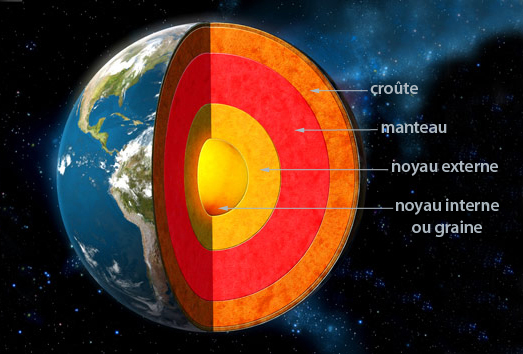

La Terre est plus grande des planètes telluriques (ou rocheuses). Elle est recouverte à 71 % par des mers et des océans, d’où son surnom de "planète bleue".Elle est aussi la seule connue où l’eau est présente sous ses trois formes : solide, liquide et gazeuse, ce qui a permis notamment le développement de la vie.Sa température moyenne à la surface est de 15 °C, mais le climat est très variable en fonction des endroits.
À 2 900 km sous nos pieds se cache le noyau de la Terre, qui comprend une partie solide, appelée noyau interne ou graine et d’une partie liquide, principalement du fer en fusion entre 3 500 et 5 000 °C, appelée noyau externe.Animée en permanence autour du noyau solide, cette masse liquide fonctionne comme une gigantesque dynamo, qui à l’instar d’une dynamo de vélo en rotation, génère des courants électriques et donc un champ magnétique, qui constitue la principale source du champ magnétique terrestre.
Au-dessus se trouve le manteau, couche la plus épaisse de la Terre (environ 2 800 km). Elle est surtout solide, avec des roches comme la péridotite. Elle se déforme lentement sous l’effet de la chaleur du noyau, provoquant des courants de convection (grands courants qui permettent la circulation de la chaleur produite au cœur de la Terre et son évacuation par les cheminées volcaniques, déplaçant également la croûte).La croûte comporte deux composantes. La croûte océanique, composée de roches volcaniques sombres comme le basalte, mesure de 7 à 8 km de profondeur.La croûte continentale est plus variée et légère, elle mesure de 25 à 70 km.